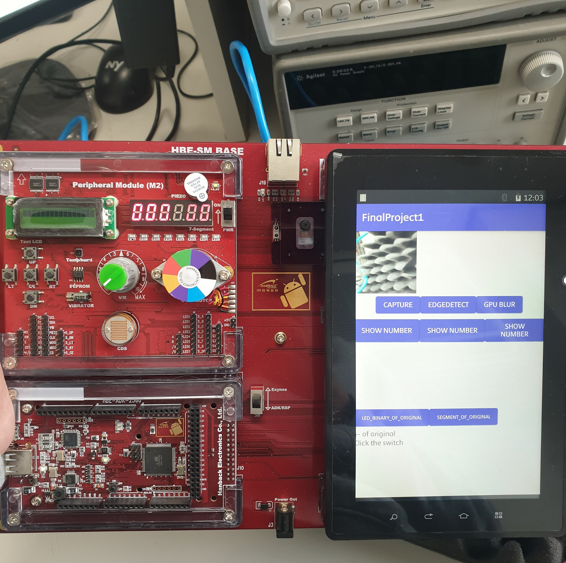
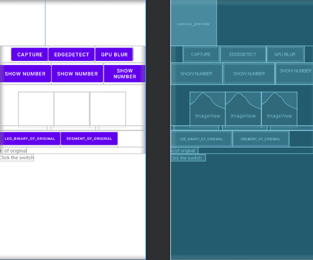
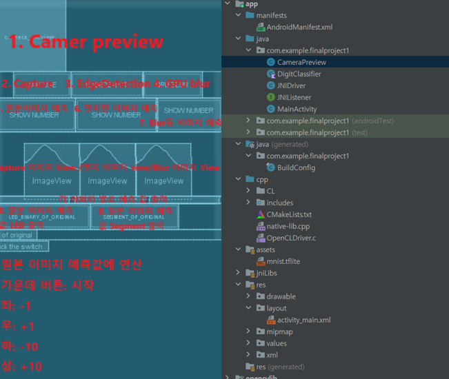
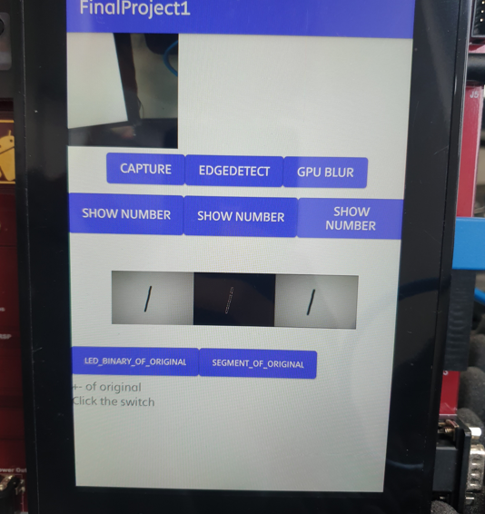
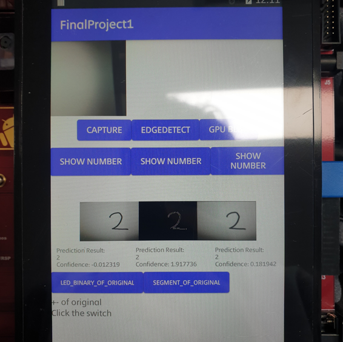
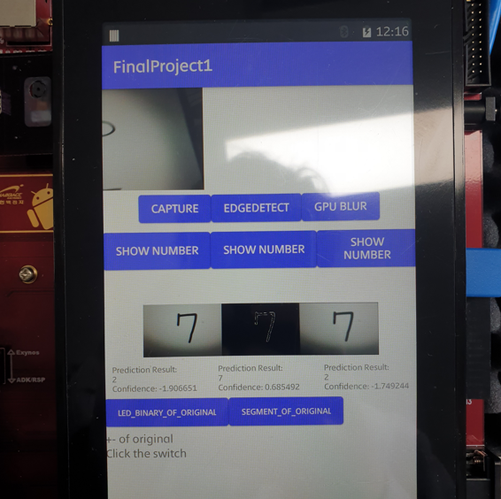
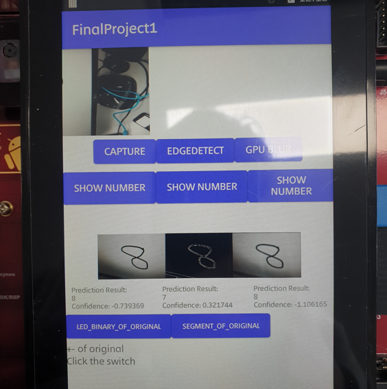

안드로이드 임베디드 시스템 이미지 처리 및 숫자 인식 애플리케이션 제작 프로젝트
2022.11.11 ~ 2022.12.15 | OpenCV, OpenCL | Linux | Java, C







"안드로이드 기반의 이미지 처리 & 숫자 인식 프로젝트"
OpenCV, OpenCL을 활용: 원본, Blur, Edge-detection 이미지 생성
MNIST를 활용해 이미지별 숫자를 분류
각 이미지별 숫자 인식 결과를 도출